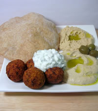
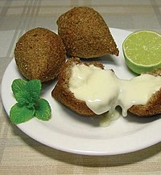

Arraigada en la cultura islámica, los Emiratos Árabes Unidos tienen fuertes
lazos con el resto del mundo árabe e islámico. El gobierno se ha comprometido
a preservar las formas tradicionales del arte y la cultura, fundamentalmente a
través de la Fundación Cultural de Abu Dabi. Hay una gran variedad cultural con
influencia asiática en escuelas, restaurantes o centros culturales.
| PLATILLOS | PRECIO | IMAGEN |
|
$465
Dírham |
 |
|
$225
Dírham |
 |